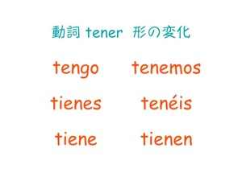

tener
> 動詞 tener 意味 何かを所有・所持している (to have) Este niño tiene mucho talento. (This boy is very talented.) Él no tiene coche. (He doesn't have a car.) 仕事や授業などがある (to have) Tengo mucho trabajo. (I have a lot of work to do.) ¿Tienes matemáticas mañana? (Do you have mathematics tommorrow?) 家族、友人、恋人がいる (to have) Tengo dos hermanas. (I have two sisters.) （年齢が）〜才である Mi papá tiene 55 años. (My father is 55 years old.) ある心理的・身体的状態にある（眠い、など） ¿Tienes sueño? (Are you sleepy?)
